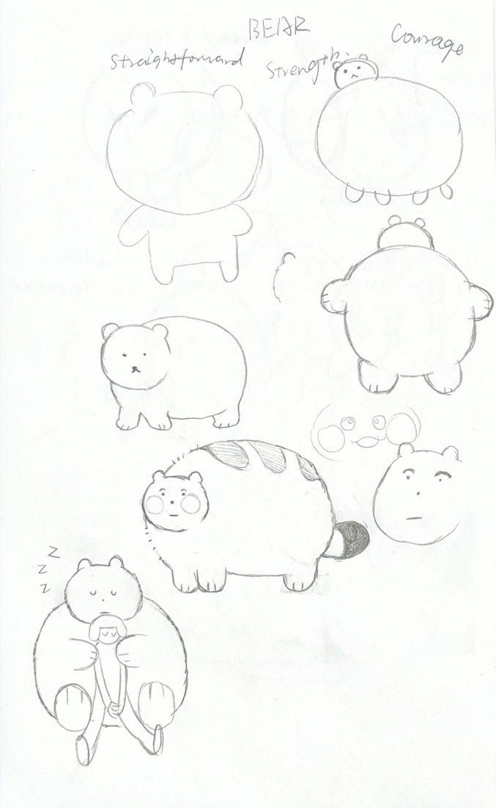
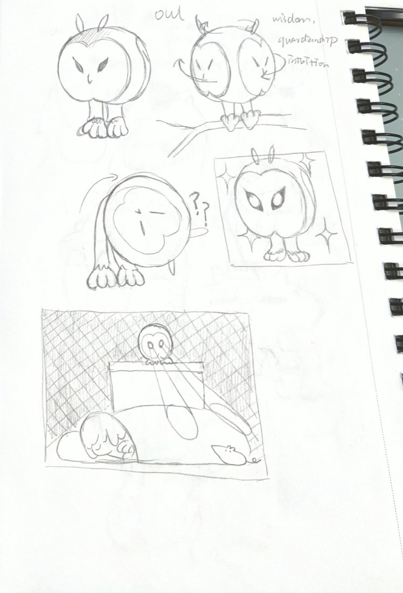
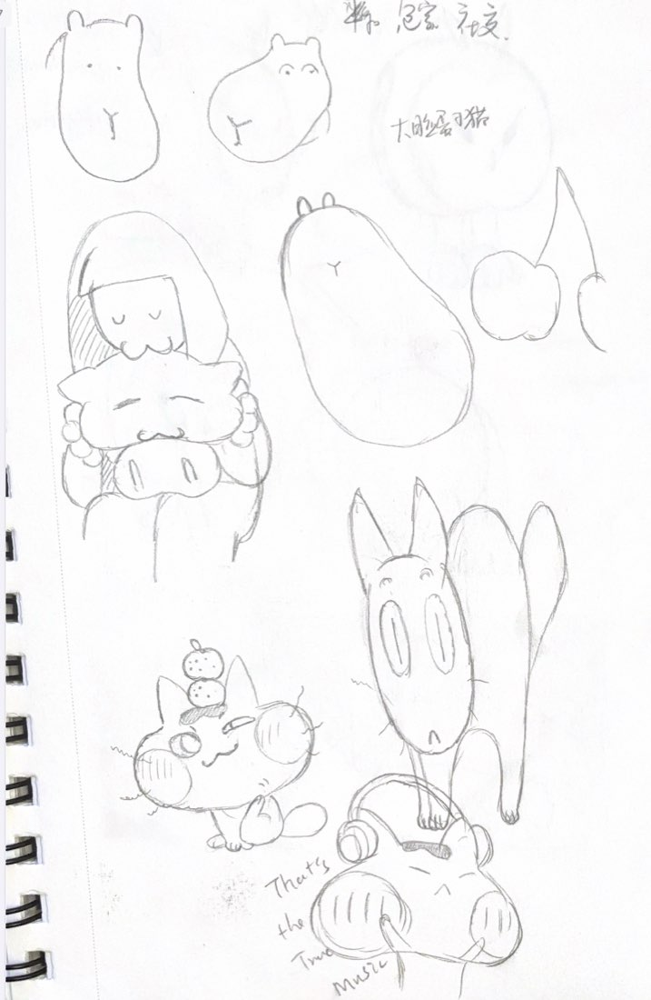
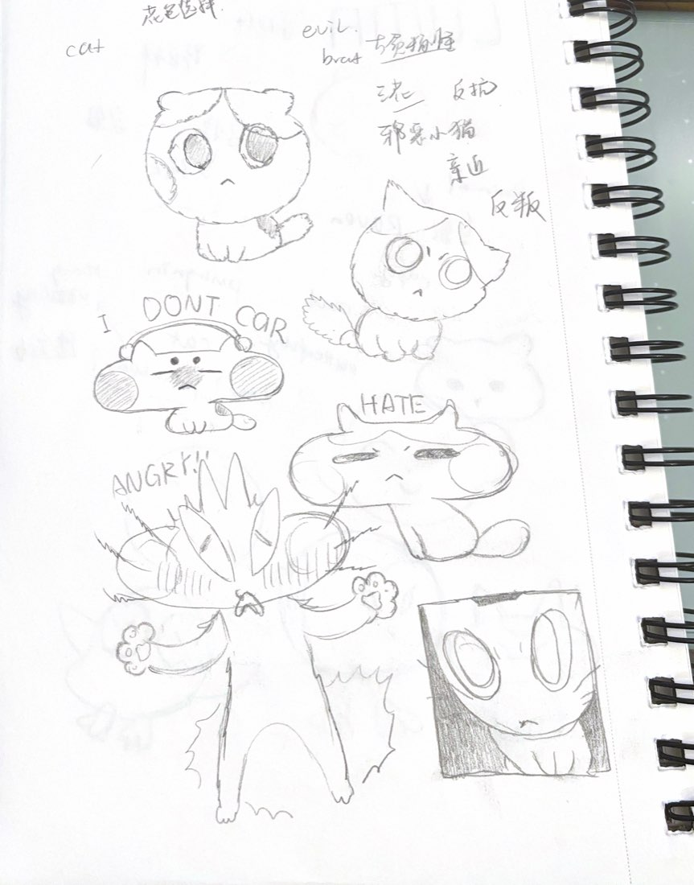
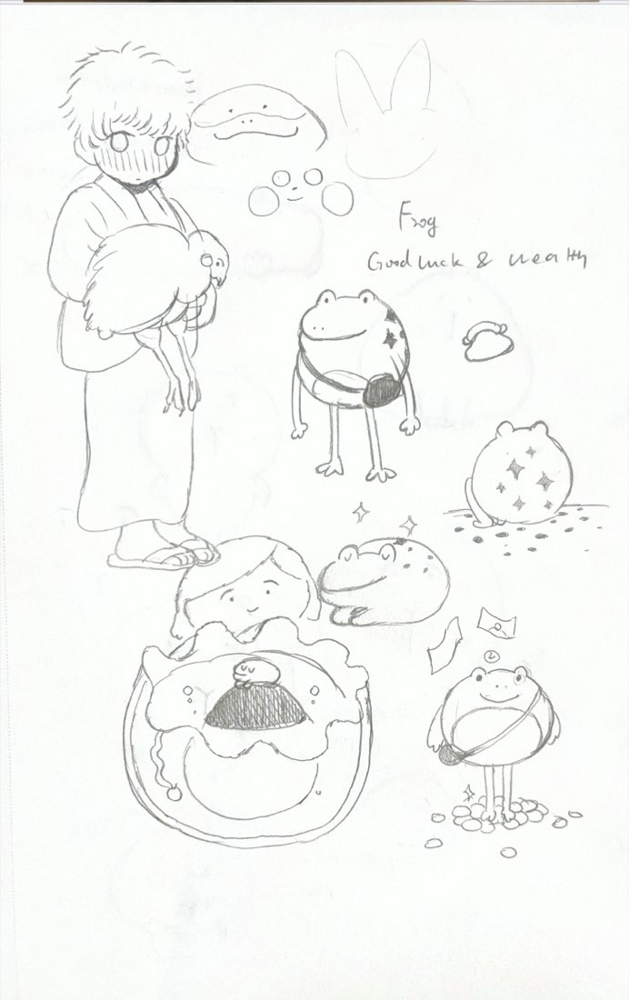
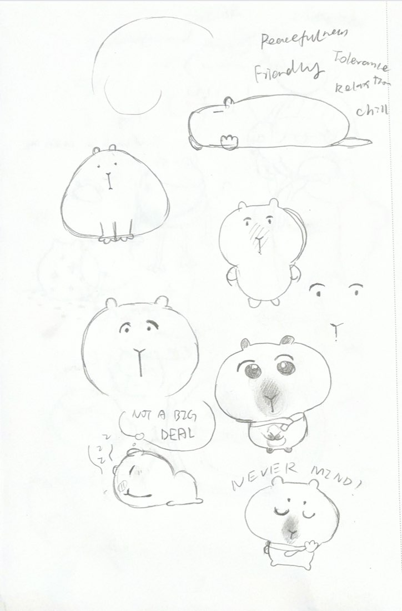

Luma Family 个人 IP 设计

IP Design
Brand Overview
IP case introduction
项目介绍 /
- IP设计
- 个人项目
< Luma Family > 是我自主发起的个人品牌项目，
围绕“守护者”这一主题创造出多个具有性格的动物角色。
通过构建视觉系统，并扩展为网页交互、周边设计。
该项目应用于线下展览，通过展示制品、创造互动场景
打造Luma独特的IP体验
Luma is a self-initiated personal brand project centered around the theme of “guardians,” featuring a cast of animal characters, each with a distinct personality.
The project builds a cohesive visual identity and extends into interactive web experiences and merchandise design.
Bringing together illustration, animation, UI/UX, and brand storytelling, Luma explores the potential of IP design to foster emotional connections.
<2025>






确定性格特点
草图发散
形象确定
Process
IP case introduction
2025
设计过程 /
确定性格特点
叛逆 我行我素
鬼点子 三分钟热度外冷内热 INTJ本人
看起来不近人情但有一眼看穿你
心思的能力没心没肺 笨蛋
很容易把事情搞砸 力气很大
温柔 很有威慑力心思最细腻 淡豚
对朋友略蔫坏爱财如命 金牛座
很有财运
最会享受生活
字典没有“努力”二字